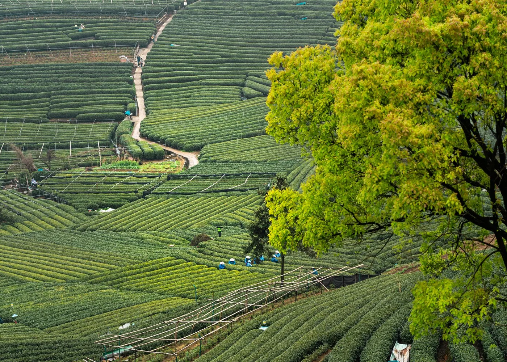
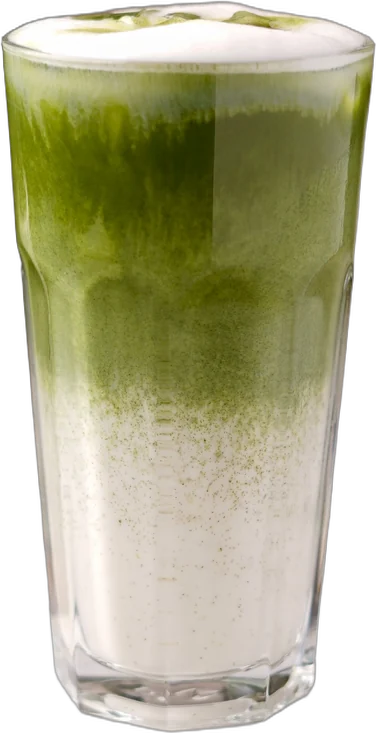
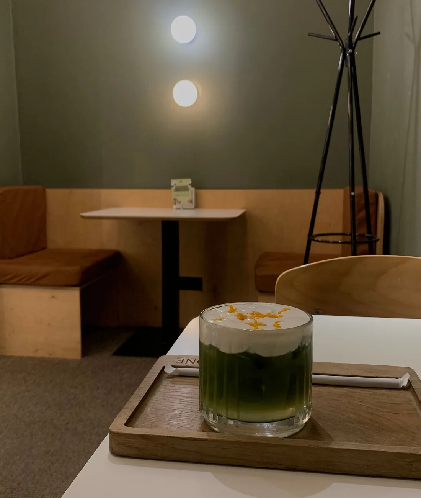
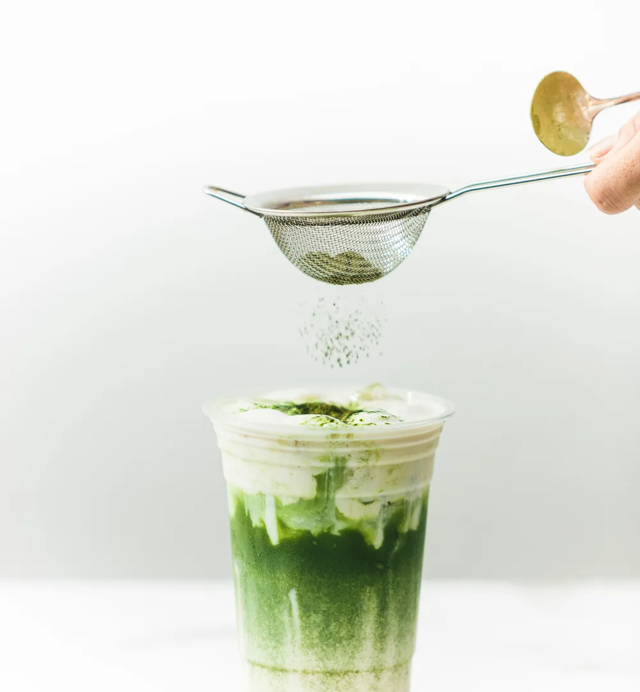
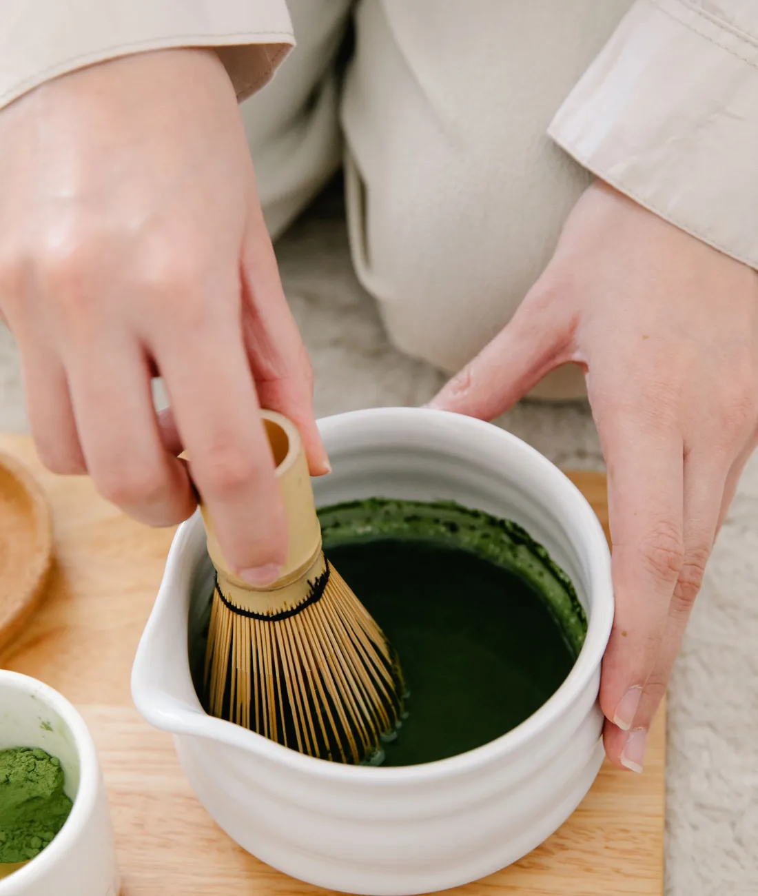
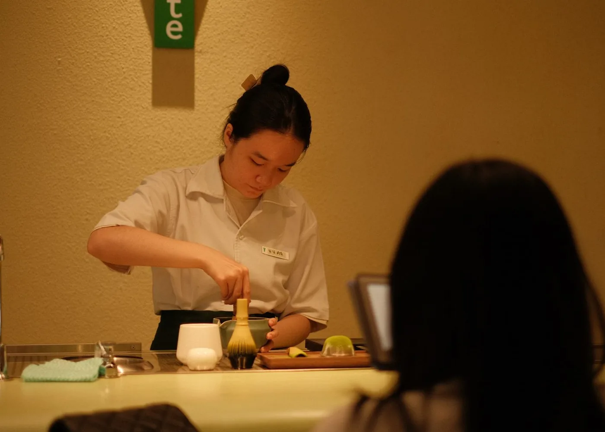

Shade grown
Tea bushes are covered for three weeks before picking. Less sun means sweeter, greener leaves full of L-theanine.
Home / About
From a shaded tea field in Uji to a bamboo whisk in Lahore. This is how every cup of Koya gets made.

Koya started with one bamboo whisk and a folding table at a Sunday market in Gulberg. People came back for the iced latte, then for the powder, then for lessons on how to whisk it at home.
Today we import first-harvest matcha straight from family farms in Uji and Kagoshima, whisk every drink by hand, and deliver across Lahore. Our tins, kits and teaware ship to every city in Pakistan.

Good matcha is slow. Three steps decide how it tastes, and we don't skip any of them.

Tea bushes are covered for three weeks before picking. Less sun means sweeter, greener leaves full of L-theanine.

The leaves are de-veined and ground on granite stones, about 40 grams an hour, into a powder finer than flour.

Every drink is whisked by hand at 75°C until it foams. Twenty seconds that make all the difference.
Weddings, mehndis, office days and launches. Our matcha cart and two baristas serve up to 300 cups a day, with a custom menu for your guests.
Ask for a quote
No sugar in our powder, no colour, no fillers. If a drink is sweet, it's because you asked for it, with our house syrups made from real cane sugar, honey or dates.
Every tin carries its harvest date. If yours isn't the brightest green you've seen, we'll replace it.